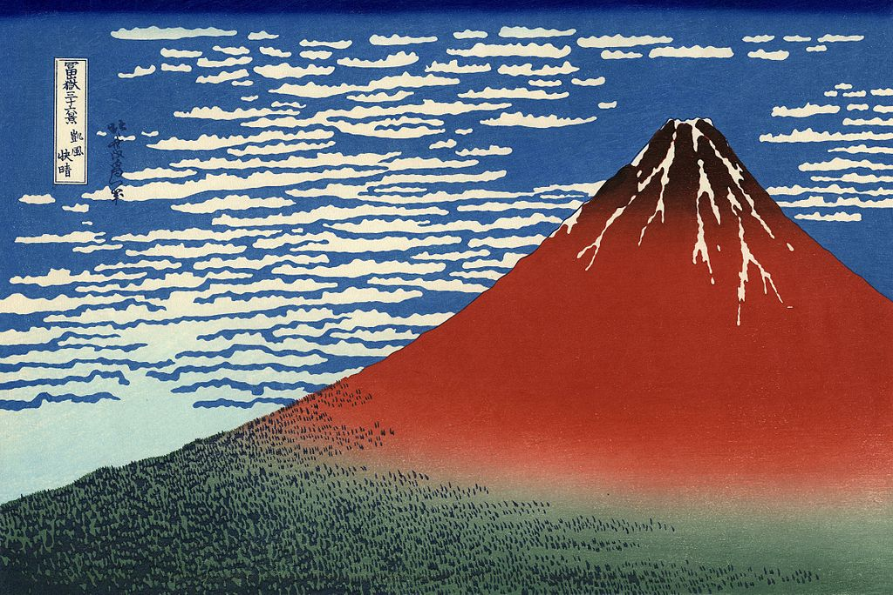

<head>
<meta charset="UTF-8" />
<meta name="keywords" content="drawing, painting" />
<meta name="description" content="drawings by Sunjy" />
<title>Sunjy</title>
<link rel="shortcut icon" type="image/x-icon" href="../../mImages/mCommon/favicon.ico" media="screen" />
<link rel="stylesheet" type="text/css" href="../../mCsses/mCommon/mCssA.css" />
<link rel="stylesheet" type="text/css" href="../../mCsses/mCommon/mCssB.css" />
<link rel="stylesheet" type="text/css" href="../../mCsses/mCommon/mCssC.css" />
<link rel="stylesheet" type="text/css" href="../../mCsses/mCommon/mCssD.css" />
<link rel="stylesheet" type="text/css" href="../../mCsses/mContent/mCssA.css" />
<link rel="stylesheet" type="text/css" href="../../mCsses/mContent/mCssB.css" />
<link rel="stylesheet" type="text/css" href="../../mCsses/mContent/mCssC.css" />
<link rel="stylesheet" type="text/css" href="../../mCsses/mContent/mCssD.css" />
</head>
<script type="text/javascript" src="../../mScripts/mContent/mContentAA.js" /></script>
<script type="text/javascript" src="../../mScripts/mContent/mContentAB.js" /></script>
<script type="text/javascript" src="../../mScripts/mContent/mContentAC.js" /></script>
<script type="text/javascript" src="../../mScripts/mContent/mContentAD.js" /></script>
<script type="text/javascript"></script> 
<script type="text/javascript">
document.write('<div class="mImgAbsolute"></div>');
/*
document.write('<p class="mFontSizeBColor" />From a white paper...</p>');
document.write('<table class="center"><tr><td>');
document.write('');
document.write('</td></tr></table>');
*/
</script>


<script type="text/javascript">
document.write('<p class="mFontSizeBColor" />Fine Wind, Clear Morning </p>');
document.write('<p class="mFontSizeSColor" />Fine Wind, Clear Morning is a woodblock print by Japanese artist Hokusai and part of his “Thirty-six Views of Mount Fuji” series, dating from 1830 to 1832.<br><br>It depicts Mt Fuji in early autumn when the wind is southerly, and the sky is clear, and the rising sun can turn Mount Fuji red.<br><br>Hokusai captures this moment with abstraction but symbolic specificity. The three shades of deepening blue of the sky mirror the three hues of the mountain.<br><br>The snow at the peak of the mountain contrast with the dark shadows of the forest at its base. The delicate clouds balance Mt. Fuji’s solid symmetrical shape on the right half of the image to the left.<br><br>There are variant impressions of this image. The original prints have a deliberately uneven blue sky, which increases the sky’s brightness and gives movement to the clouds.<br><br>The peak is brought forward with a halo of Prussian blue. Subsequent prints have a strong, even blue tone, and the printer added a new block, overprinting the white clouds on the horizon with light blue.<br><br>Later prints also typically employ an intense Bengal red pigment, which has given the painting its common name of Red Fuji.<br><br><br>Thirty-Six Views of Mount Fuji<br><br>Thirty-six Views of Mount Fuji is a series of landscape prints by Hokusai that depicts Mount Fuji from different locations and in various seasons and weather conditions.<br><br>Despite its name, it consists of 46 prints, with 10 of them being added after the initial publication.<br><br>This print and The Great Wave off Kanagawa, are perhaps the most widely recognized pieces of Japanese art. Both are superb examples of the Japanese art of Ukiyo-e, “pictures of the floating world.”<br><br>Although Ukiyo-e can depict anything from contemporary city life to classical literature, it was landscapes like this that earned Hokusai his fame. The saturated colors and stylized forms in such prints helped inspire the Impressionist and Post-impressionist movements decades later.<br><br>Mount Fuji<br><br>The mountain with a snow-capped peak is Mount Fuji, which in Japan is considered sacred and a symbol of national identity.<br><br>Mount Fuji is an iconic figure in many Japanese representations of famous places, as it is regarded as a symbol of beauty.<br><br>Mount Fuji is the highest mountain in Japan at 3,776.24 m (12,389 ft). It is a dormant volcano that last erupted in 1707–1708. Mount Fuji lies about 100 kilometers (60 mi) south-west of Tokyo and can be seen from there on a clear day.<br><br>Mount Fuji’s exceptionally symmetrical cone, which is snow-capped for about five months a year, is a well-known symbol of Japan. Mount Fuji has “inspired artists and poets and been the object of pilgrimage for centuries.”<br></p>');
document.write('<table class="center" /><tr><td>');
document.write('<br>It depicts Mt Fuji in early autumn when the wind is southerly, and the sky is clear, and the rising sun can turn Mount Fuji red.<br><br>Hokusai captures this moment with abstraction but symbolic specificity. The three shades of deepening blue of the sky mirror the three hues of the mountain.<br><br>The snow at the peak of the mountain contrast with the dark shadows of the forest at its base. The delicate clouds balance Mt. Fuji’s solid symmetrical shape on the right half of the image to the left.<br><br>There are variant impressions of this image. The original prints have a deliberately uneven blue sky, which increases the sky’s brightness and gives movement to the clouds.<br><br>The peak is brought forward with a halo of Prussian blue. Subsequent prints have a strong, even blue tone, and the printer added a new block, overprinting the white clouds on the horizon with light blue.<br><br>Later prints also typically employ an intense Bengal red pigment, which has given the painting its common name of Red Fuji.<br><br><br>Thirty-Six Views of Mount Fuji<br><br>Thirty-six Views of Mount Fuji is a series of landscape prints by Hokusai that depicts Mount Fuji from different locations and in various seasons and weather conditions.<br><br>Despite its name, it consists of 46 prints, with 10 of them being added after the initial publication.<br><br>This print and The Great Wave off Kanagawa, are perhaps the most widely recognized pieces of Japanese art. Both are superb examples of the Japanese art of Ukiyo-e, “pictures of the floating world.”<br><br>Although Ukiyo-e can depict anything from contemporary city life to classical literature, it was landscapes like this that earned Hokusai his fame. The saturated colors and stylized forms in such prints helped inspire the Impressionist and Post-impressionist movements decades later.<br><br>Mount Fuji<br><br>The mountain with a snow-capped peak is Mount Fuji, which in Japan is considered sacred and a symbol of national identity.<br><br>Mount Fuji is an iconic figure in many Japanese representations of famous places, as it is regarded as a symbol of beauty.<br><br>Mount Fuji is the highest mountain in Japan at 3,776.24 m (12,389 ft). It is a dormant volcano that last erupted in 1707–1708. Mount Fuji lies about 100 kilometers (60 mi) south-west of Tokyo and can be seen from there on a clear day.<br><br>Mount Fuji’s exceptionally symmetrical cone, which is snow-capped for about five months a year, is a well-known symbol of Japan. Mount Fuji has “inspired artists and poets and been the object of pilgrimage for centuries.”<br>" />');
document.write('</td></tr></table>');
</script>


